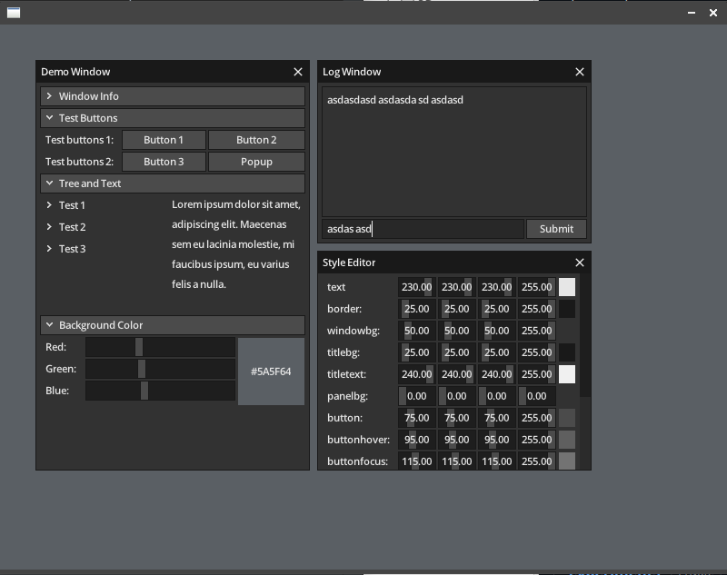

Immediate-mode GUIs (IMGUI) have gained huge popularity in game engines, diagnostics tools, and embedded renderers because they eliminate state synchronization between application logic and UI widgets. In C, rxi's microui was an inspirational masterpiece of minimalism: tiny, fast, and dependency-free.
However, naive ports from C to Rust often end up wrapping raw pointers in unsafe or compromising performance with excessive Rc<RefCell<T>> allocations. In developing microui-rs under the NeoCogi organization, the goal was a faithful, idiomatic Rust port (not a binding): high ergonomic safety, zero dynamic allocations during the render loop, and predictable memory bounds.
Note: A separate experiment, microui-redux, later explored a different design tangent that embraced dynamic allocations for alternate flexibility. In contrast, microui-rs remains the dedicated zero-allocation immediate-mode foundation.

1. The Problem with Direct C Translations
C's MicroUI heavily relies on a global or shared context pointer passed everywhere, with internal command buffers mutating in-place across widget invocations. Translating this directly to Rust hits the borrow checker immediately:
- You cannot pass
&mut Contextto a widget closure that also reads context state. - Command buffers need to be appended without invalidating transient widget references.
2. Command Buffer Arenas & Token-Based Contexts
The solution lies in splitting context responsibilities into two distinct phases: Layout/Input evaluation and Command Emission.
// Idiomatic Rust immediate widget declaration
pub fn button(&mut self, label: &str) -> bool {
let id = self.get_id(label);
let rect = self.layout_next();
self.update_control(id, rect, 0);
let is_clicked = self.mouse_pressed == MouseButton::Left
&& self.focus == id;
self.draw_button_frame(rect, self.focus == id);
self.draw_text(label, rect.pos, Color::WHITE);
is_clicked
}
Rather than having widgets allocate strings or command nodes, commands are pushed as plain-old-data (POD) variants into a pre-allocated fixed circular buffer:
#[repr(C)]
#[derive(Clone, Copy)]
pub enum Command {
Rect { rect: Rect, color: Color },
Text { font: FontId, pos: Vec2, color: Color, text_idx: u32, len: u16 },
Icon { id: IconId, rect: Rect, color: Color },
Clip { rect: Rect },
}
Context struct is instantiated with its scratch memory, no calls to malloc, free, or Rust's global allocator occur during the 60+ FPS game loop.
3. Ergonomic Rust API
In microui-rs, UI window scoping is safely handled using Rust RAII guards or closures, ensuring that panels and tree nodes are always cleanly closed even if an early return occurs:
ctx.window("Diagnostics", Rect::new(10, 10, 260, 200), |ctx| {
if ctx.button("Run Triangulation Benchmark") {
run_benchmarks();
}
ctx.label(&format!("FPS: {:.1}", current_fps));
});
Conclusion
Writing low-level graphics tools in Rust does not mean giving up on the raw performance and simplicity that C developers cherish. By designing around contiguous memory arenas and borrowing semantics, we achieve both type-safe ergonomics and blisteringly fast immediate-mode UI execution.
Check out the code on GitHub: NeoCogi/microui-rs.